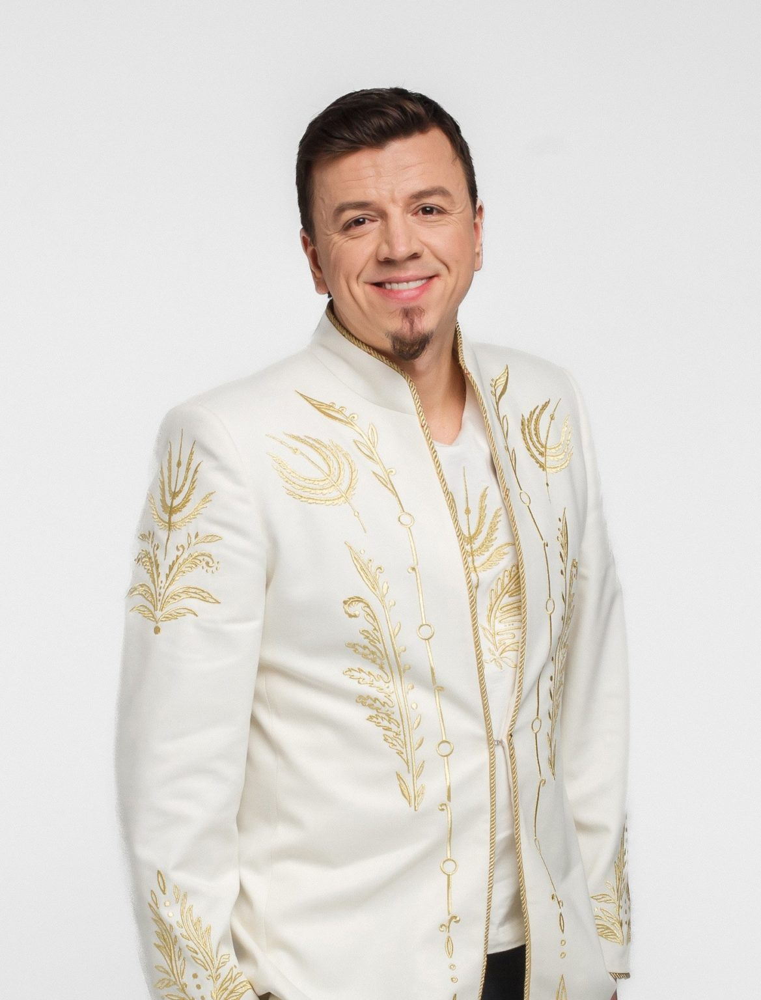
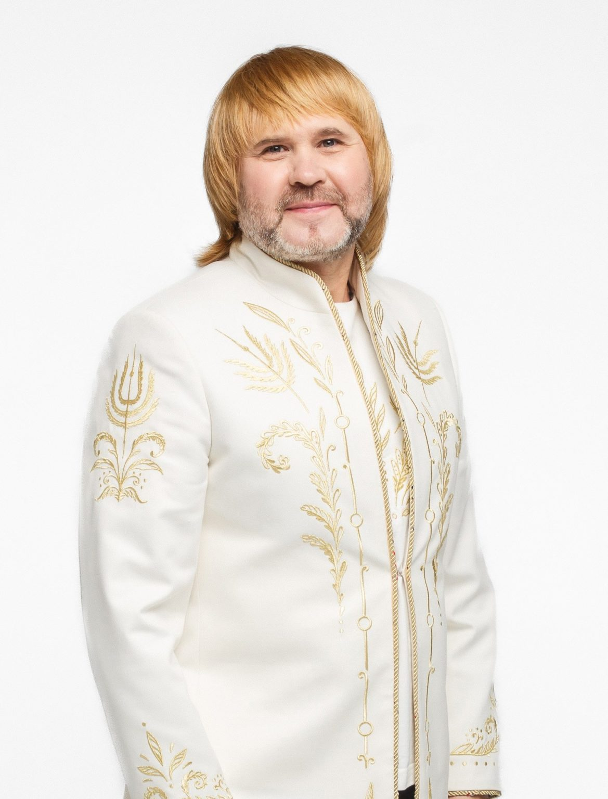
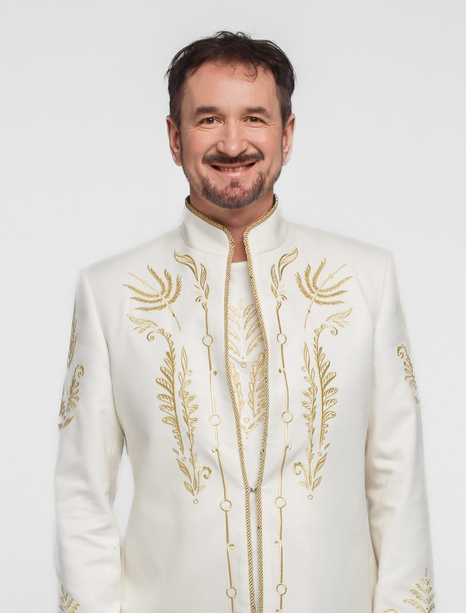
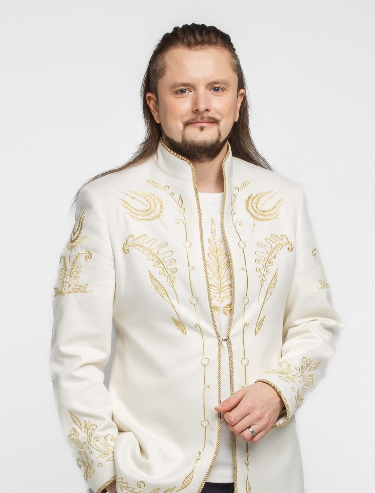
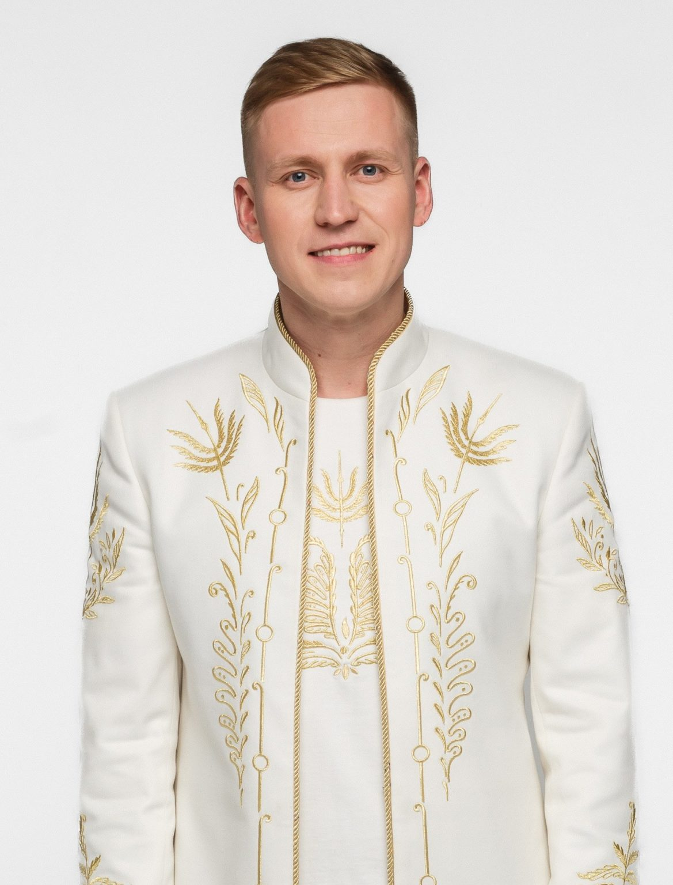
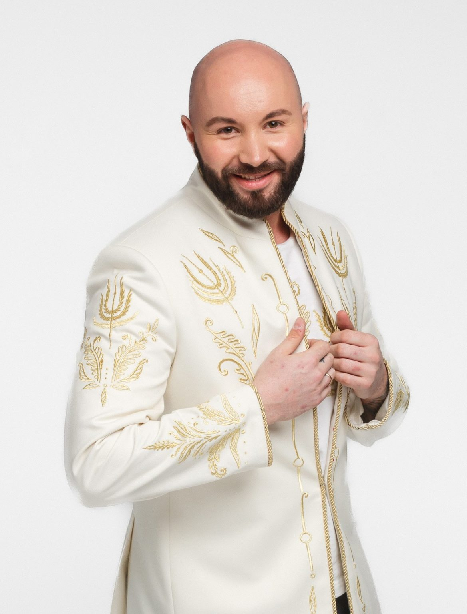
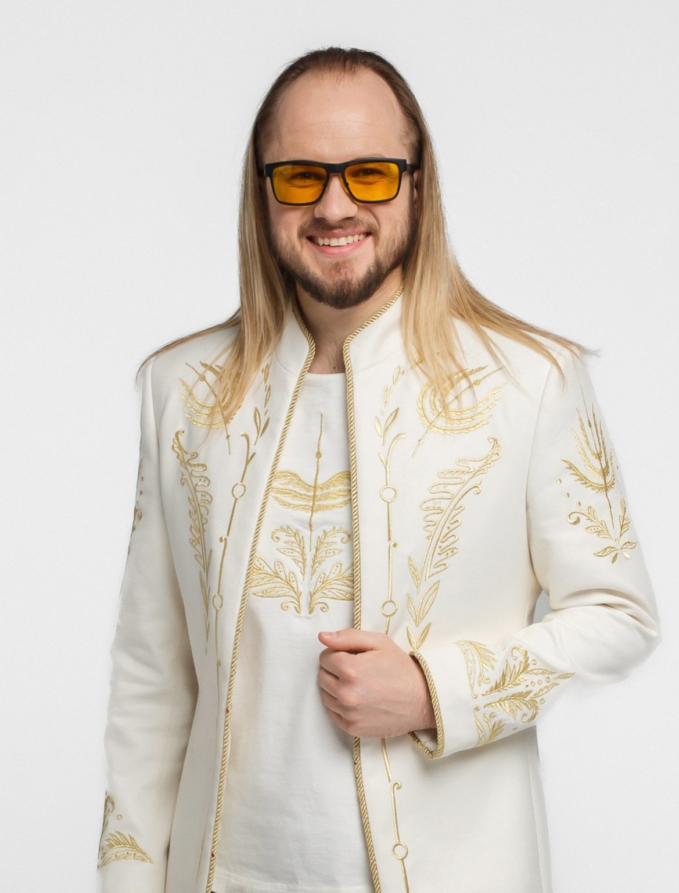

Участники ансамбля
Козырев Роман
Директор-художественный руководитель, клавишные, аранжировка, композиция
С 2003 в ВИА “Песняры (БГА)” – клавишные, аранжировка, композиция, музыкальный руководитель
С 2016 – директор-художественный руководитель.
Родился 27.07.1978 г. Гомель. Окончил музшколу, музыкальное училище им. Соколовского и БГУКИ. Потомственный музыкант. Ученик Аркадия Эскина.
Железняков Олег
Солист-вокалист, композиция, аранжировка, акустическая гитара
С 2003 года в ВИА “Песняры (БГА)”
Родился в г. Речица. Образование: музыкальная школа (баян, фортепиано). Лидер групп «Тяжелая артиллерия», «Ром». Автор альбома «Странник».
Горбацкий Сергей
С 2018 в ВИА “Песняры (БГА)” – гитара, гитара-соло, композиция, стихи
Родился в Пинске, 15.08.1972. Служба в погранвойсках, группы «Перекрёсток», «Минское море», NAKA, ВИА «СПЕЦНАЗ». Образование — БГУКИ.
Боёк Сергей
С 2012 в ВИА “Песняры (БГА)” – бас-гитара
Закончил Белорусскую государственную академию музыки.
Дударчик Игорь
С 2016 в ВИА “Песняры (БГА)” – солист-вокалист
Образование — Гродненский гуманитарный колледж. Лауреат конкурса “Звезда”. Родом из Слонима.
Михайлов Артур
С 2013 в ВИА “Песняры (БГА)” – солист-вокалист
Родился в 1990 в г. Молодечно. Лауреат множества конкурсов, поёт на 8 языках. Выпускник Института им. Широкова, вокальный мастер-класс Петра Елфимова.
Туровец Юрий
С 2012 в ВИА “Песняры (БГА)” – ударные
Родной город — Мозырь. Образование: Мозырьское музучилище и Белорусская государственная академия музыки. Потомственный музыкант.
